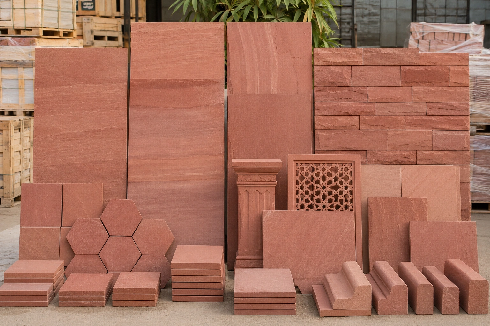
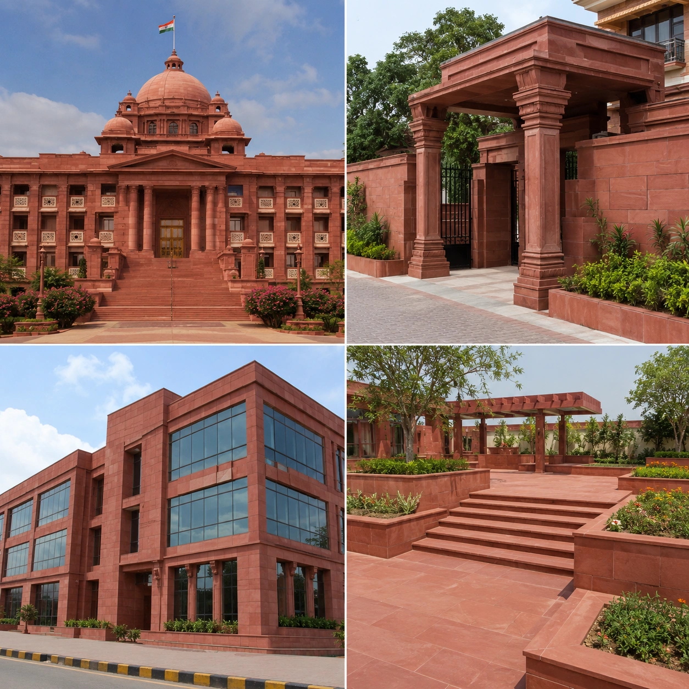
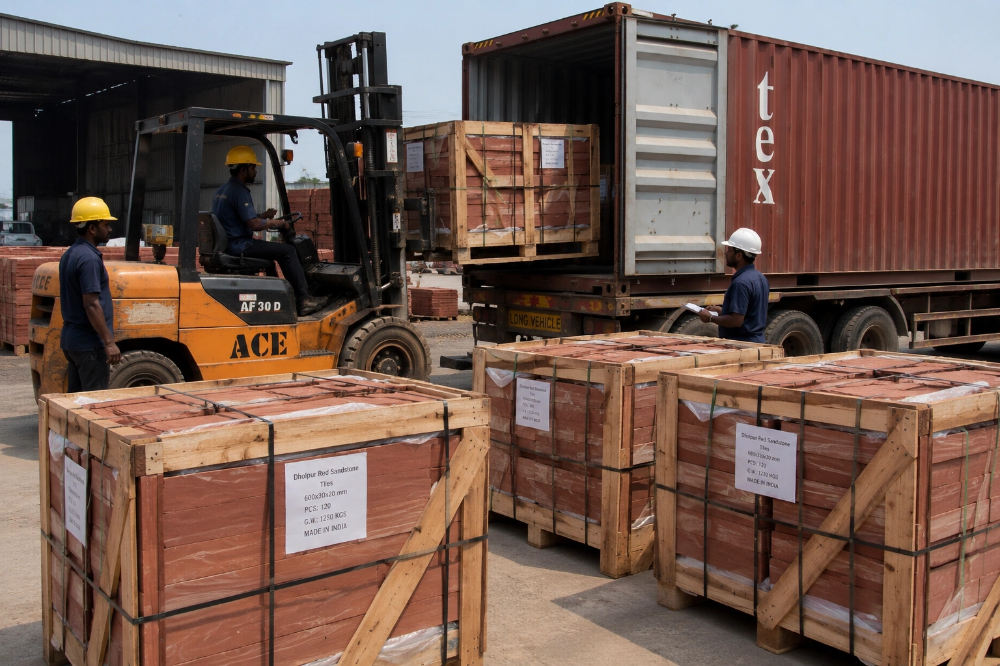
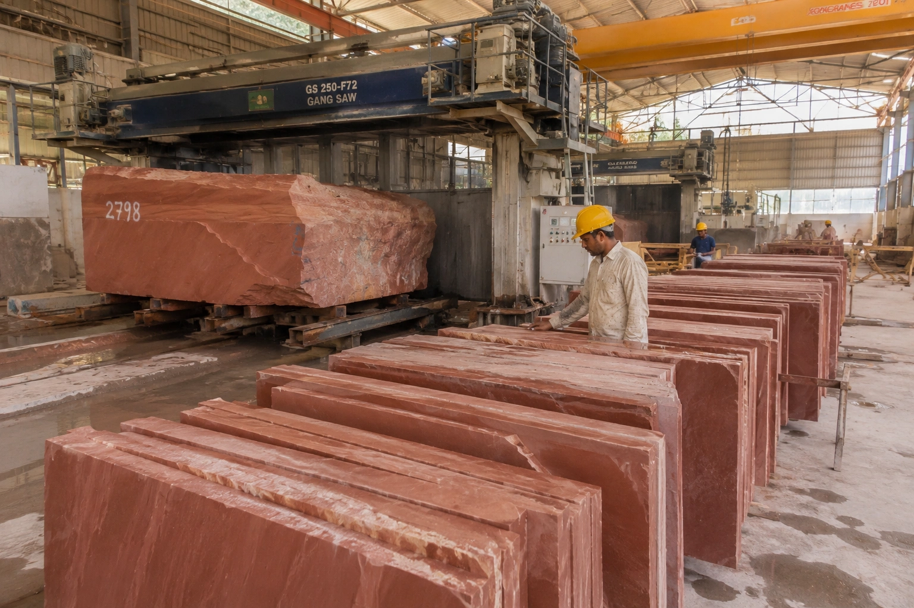

ANAY Premium Stone is a trusted Dholpur Red Sandstone supplier providing premium sandstone products for architects, builders, landscape designers, distributors and international buyers. Known for its rich terracotta-red colour, natural strength and timeless architectural appeal, Dholpur Red Sandstone is widely used in public buildings, commercial developments, luxury estates and landscape projects worldwide.
Request a QuoteDholpur Red Sandstone is one of India's most iconic natural building stones. Quarried in Rajasthan, this premium sandstone is recognised for its distinctive terracotta-red colour, fine grain texture and exceptional durability.
The stone has been widely used in monumental architecture, government buildings, institutional projects and premium commercial developments because of its natural strength and timeless appearance.
As a leading Dholpur Red Sandstone supplier, ANAY Premium Stone provides dependable supply, consistent quality and professional project support for domestic and international customers.

Dholpur Red Sandstone combines natural beauty with long-term performance. Its distinctive red colour creates strong architectural character while maintaining the durability required for demanding construction environments.
Architects and builders frequently select Dholpur Red Sandstone for projects where a bold natural stone appearance and long service life are important design objectives.
Its combination of colour, durability and architectural significance continues to make Dholpur Red Sandstone one of India's most respected sandstone products.
ANAY Premium Stone supplies Dholpur Red Sandstone in a wide range of formats suitable for architectural, landscape and construction applications. Our products are manufactured according to project requirements and supplied for both domestic and international projects.
Whether the requirement is for government infrastructure, institutional architecture, commercial developments or luxury residential projects, we provide premium Dholpur Red Sandstone products supported by reliable supply capabilities.
These products are supplied to builders, architects, developers, landscape designers, distributors, traders and importers worldwide.

Dholpur Red Sandstone is widely used across public, commercial and residential architecture. Its rich terracotta-red appearance creates a distinctive visual identity while maintaining the durability expected from premium natural stone.
The stone is frequently selected for projects where strength, architectural presence and long-term performance are essential design considerations.
Its architectural significance and natural durability continue to make Dholpur Red Sandstone a preferred material for prestigious projects throughout India and international markets.

ANAY Premium Stone supplies Dholpur Red Sandstone throughout India and international markets. Our export-focused operations support builders, distributors, procurement companies, contractors and importers seeking dependable access to premium sandstone products.
We provide professional packaging, quality inspection and logistics support to ensure sandstone products arrive safely and meet project specifications.
Our goal is to provide international buyers with reliable access to premium Dholpur Red Sandstone sourced directly from Rajasthan, India.
We regularly supply Dholpur Red Sandstone to architects, builders, distributors, importers, government contractors and procurement companies seeking a reliable Dholpur Red Sandstone supplier for long-term sourcing and project-based procurement.

ANAY Premium Stone combines access to premium sandstone resources with professional manufacturing capabilities. Our production systems focus on dimensional accuracy, product consistency and efficient project execution.
From raw sandstone blocks to finished architectural products, every stage of production is managed to maintain the quality standards expected by architects, builders and international buyers.
This manufacturing capability allows us to support large-scale construction projects, government developments and specialised architectural requirements.
ANAY Premium Stone supplies Dholpur Red Sandstone to customers across India and international markets. Our products are used in public infrastructure, institutional developments, commercial projects and premium residential architecture where durability and architectural impact are essential.
We work closely with customers seeking a dependable Dholpur Red Sandstone supplier for long-term sourcing and project-based procurement requirements.
Dholpur Red Sandstone is a premium natural sandstone quarried in Rajasthan, India. It is known for its rich terracotta-red colour, durability and suitability for both interior and exterior architectural applications.
We supply slabs, tiles, paving stones, wall cladding, pool coping, kerbstones, steps, risers and custom architectural sandstone products.
Yes. Dholpur Red Sandstone is widely used for paving, facades, landscape architecture, public spaces and outdoor construction projects.
Yes. ANAY Premium Stone supplies Dholpur Red Sandstone to international buyers and supports export packaging and logistics requirements.
Yes. We support wholesale distribution, project procurement and large-scale construction projects.
Yes. Products can be manufactured according to project specifications and architectural requirements.
It is widely used in government buildings, institutional projects, commercial developments, landscape architecture, courtyards and monumental entrances.
Yes. Architects, builders and project developers can source Dholpur Red Sandstone directly from ANAY Premium Stone.
Yes. Dholpur Red Sandstone is frequently used for public buildings, institutional developments, commercial architecture and infrastructure projects because of its durability and distinctive appearance.
Simply contact ANAY Premium Stone with your project requirements and we will provide pricing and supply information.
Looking for a reliable Dholpur Red Sandstone supplier? Contact ANAY Premium Stone for pricing, technical specifications, samples, project support and bulk supply requirements.
✓ Premium Quality Dholpur Red Sandstone
✓ Bulk Supply Available
✓ Export Grade Packaging
✓ Custom Sizes & Finishes
Email: anaypremiumstone@gmail.com
Phone / WhatsApp: +91 7732865515
Location: Sarmathura, Dholpur, Rajasthan, India